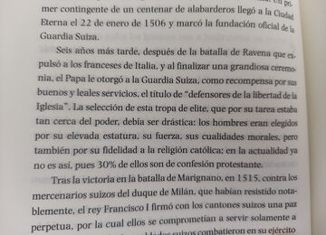

How it works
The photo stays with the word
1Take a photo of the page, a sign or a screen.
2Every word becomes tappable. The page is read by an OCR engine that returns each word with its outline, so a tap is enough to say which word you mean.
3Tap any word. Its sentence is found and highlighted on the photo.
4The meaning in that sentence appears in about a second. Add keeps the word, the sentence and the photo; or just read on.

Seis años más tarde, después de la batalla de Ravena […] el Papa le otorgó a la Guardia Suiza […] el título de “defensores de la libertad de la Iglesia”.
Six years later […] the Pope granted the Swiss Guard […] the title of “defenders of the freedom of the Church”.
✳ your sentenceIn the entry the sentence carries the photo it came from. Seeing where you met a word is one more thing to remember it by.
Each part chosen by experiment
experiments/photo-capture
Reading the page
Cloud Vision: the right word under the tap 98% of the time, tappable in 1.6–1.9 s
RapidOCR, a local model: 80% (68% on book photos), 7.5 s
Finding the sentence
SaT, a segmentation model: the whole sentence right for 98% of taps
Punctuation rules: 69–74%. OCR text has headings and lines with no full stop
The meaning of the tap
A fast language model: 1.0 s; right word or phrase 85% exactly, 98% nearly
A more accurate model: 4.4 s, too slow for a tap
Measured on 13 photos and screenshots of Spanish text, with 59 taps checked by hand.